Slump Test
Objective
To find the slump of mix design M35 concrete.
Apparatus used:
Slump cone, tamping rod, trowel, measuring jar, weighing balance etc..

Find the volume of the cone from its dimensions ie, by measuring its height and diameter.
 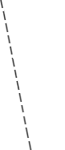
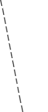


 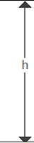
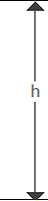


H = 60cm
R = 10cm
h = 30cm
r = 5cm
Volume of slump cone = 5.498×10-3m3
Measure required quantity of water, coarse, fine aggregate and cement based on mix design.
Mix proportion is = 1 : 2.7 : 4.2
Water Cement ratio assumed is = 0.43
Cement content = 1.6Kg
Quantity of fine aggregate = 4.3Kg
Quantity of coarse aggregate = 6.7Kg
Water content = 0.43 x Cement content
Water content = 0.43 x 1.6 = 0.67Liter


 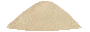
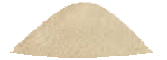


00.00 g
g
Quantity of cement = 1.6Kg
Quantity of fine aggregate = 4.3Kg
Quantity of coarse aggregate = 6.7Kg
Volume of water = 0.67Liter
1.6Kg Cement
4.3Kg Fine aggregate
6.7Kg Coarse aggregate
Dry mix the materials properly.


 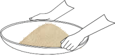
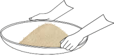

Add measured quantity of water, mix it thoroughly and uniformly.


Place the cleaned slump cone on a horizontal slump base.


Fill the mould in four layers, each layer is tamped 25 times by a tamping rod.


 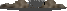
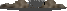
Remove extra concrete with the trowel and tamping rod.
 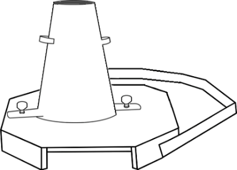
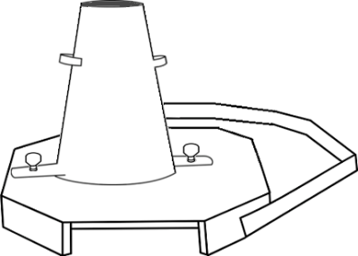
Remove the mould from the concrete immediately by raising it slowly in vertical direction.
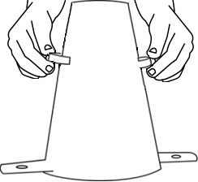

Note down the slump by keeping slump cone mould as reference.


 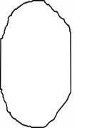
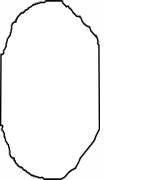
Observation
Volume of slump = 5.498x10-3 m3
water cement ratio assumed is = 0.43
Mix proportion is = 1 : 2.7 : 4.2
Quantity of cement = 2.7Kg
Quantity of fine aggregate = 1.6Kg
Quantity of coarse aggregate = 6.7Kg
Volume of water = 0.67Liter
Slump value = 30 - 12 = 18cm
Trial =